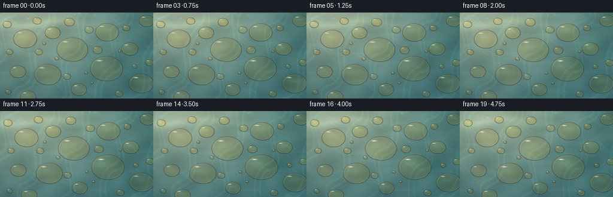
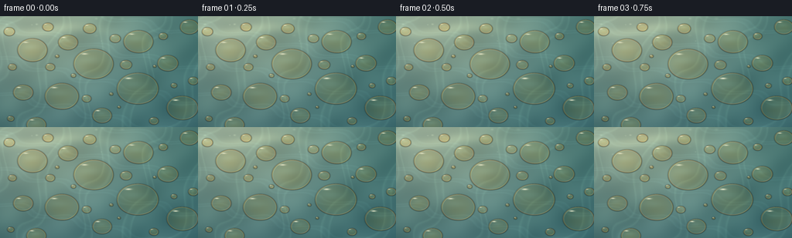

CODING AGENTS AS PIXEL WORLD MODELS
traex/GPT-6.1-Sol · phygen_077
点击播放 · 原生 RGB 像素
逐轮保存的候选
回放视频、检查图与代码变化。
每份候选均可单独播放。实际图片检查记录在下方工具轨迹中。
候选 01播放与检查图
点击播放 · 原生 RGB 像素


展开代码变化
--- 上一保存版本
+++ 本次保存版本
@@ -0,0 +1,160 @@
+"""Analytic macro-photography rendering of buoyant oil lenses on sunlit water.
+Only numpy / PIL geometry and light transport approximations are used.
+"""
+from pathlib import Path
+import json
+import numpy as np
+from PIL import Image, ImageFilter
+import artifact_io
+
+ROOT = Path(__file__).resolve().parent
+SPEC = json.loads((ROOT / 'task_spec.json').read_text())
+W, H = SPEC['width'], SPEC['height']
+SCALE = 3
+XX, YY = np.meshgrid((np.arange(W*SCALE)+.5)/SCALE,
+ (np.arange(H*SCALE)+.5)/SCALE)
+X, Y = XX.astype(np.float32), YY.astype(np.float32)
+rng = np.random.default_rng(77)
+
+# Shallow, capillary-bound floating lenses; radii are in image pixels.
+LAYOUT = [
+ (42,44,19.5,.78),(88,34,12.8,.77),(121,62,26.0,.76),
+ (179,33,19.4,.76),(217,61,13.5,.77),(178,94,27.0,.76),
+ (80,104,22.0,.78),(30,99,13.0,.77),(132,129,12.6,.78),
+ (236,119,20.5,.76),(47,141,12.8,.76),(12,20,7.2,.77),
+ (62,14,7.2,.76),(116,16,8.5,.76),(149,29,7.1,.76),
+ (163,63,7.7,.77),(211,26,5.8,.77),(199,136,6.2,.77),
+ (112,107,6.1,.77),(65,66,6.2,.77),(16,66,5.5,.77),
+ (245,14,12.4,.77),(250,84,6.6,.78),(225,90,4.0,.77),
+ (14,133,4.5,.77),(95,77,3.3,.77),(74,52,2.5,.77),
+ (144,101,2.4,.77),(200,65,2.1,.77),(154,118,2.0,.77)
+]
+DROPS=[]
+for i,(cx,cy,r,aspect) in enumerate(LAYOUT):
+ DROPS.append((cx,cy,r,aspect,rng.uniform(0,2*np.pi),rng.uniform(.5,1.1),rng.uniform(.0,1)))
+
+
+def water(x, y, t):
+ # Coherent superposition of very shallow surface waves, rather than noise frames.
+ p1 = .072*x + .119*y - .47*t
+ p2 = -.108*x + .070*y + .32*t + 1.2
+ p3 = .039*x - .061*y - .23*t + 2.7
+ p4 = .162*x + .053*y + .19*t
+ w1,w2,w3,w4=np.sin(p1),np.sin(p2),np.sin(p3),np.sin(p4)
+ swell=.50*w1+.25*w2+.39*w3+.10*w4
+ sheen=.5+.5*np.sin(.039*x+.034*y+.45*swell)
+ glow=np.exp(-((x-47)/150)**2-((y+23)/135)**2)
+ depth=np.clip(y/165,0,1)
+ rgb=np.empty(x.shape+(3,),dtype=np.float32)
+ rgb[...,0]=61+94*glow-7*depth+8*swell+5*sheen
+ rgb[...,1]=113+62*glow-11*depth+9*swell+5*sheen
+ rgb[...,2]=111+40*glow-4*depth+8*swell+6*sheen
+ # A soft warped reflection of the sky, and faint continuous caustic filaments.
+ trace=np.sin(.097*x+.030*y+.9*w3+.27*w2-.21*t)
+ caustic=np.exp(-((trace-.87)/.080)**2)
+ trace2=np.sin(-.033*x+.142*y+.65*w1+.17*t)
+ caustic2=np.exp(-((trace2-.94)/.060)**2)
+ rgb += (caustic[...,None]*np.array([7,9,7])+caustic2[...,None]*np.array([4,6,6]))
+ # Distant diffuse sunlight creates non-uniform, real photographic reflections.
+ streak=np.exp(-((y-18-4*np.sin(.047*x+.24*t))/7)**2)*np.exp(-((x-46)/90)**2)
+ rgb += streak[...,None]*np.array([25,23,15])
+ return rgb
+
+# Soft, out-of-focus reflections of sunlight on the far water.
+bokeh=[]
+for i in range(38):
+ cx=rng.uniform(-10,270);cy=rng.uniform(-8,42)
+ rad=rng.uniform(.4,2.8)
+ bright=rng.uniform(6,31)*np.exp(-((cx-56)/150)**2)
+ bokeh.append((cx,cy,rad,bright,rng.uniform(0,6.28)))
+
+
+def frame(t):
+ img=water(X,Y,t)
+ for cx,cy,rad,amp,phase in bokeh:
+ bx=cx+.8*np.sin(.6*t+phase);by=cy+.6*np.cos(.44*t+phase)
+ intensity=amp*(.78+.22*np.sin(.7*t+phase))
+ b=np.exp(-((X-bx)/rad)**2-((Y-by)/(rad*.66))**2)
+ img+=b[...,None]*intensity*np.array([1.,.96,.76])
+ # Tiny correlated photographic grain; it is fixed in space, not flickering.
+ grain=(np.sin(X*9.23+Y*15.73)+np.sin(X*20.18-Y*6.67))*.30
+ img+=grain[...,None]
+
+ for i,(cx,cy,r,aspect,phase,speed,hue) in enumerate(DROPS):
+ # Slow advection and slight independent motion, maintaining separated lenses.
+ cx = cx+.58*t+.58*(np.sin(.55*t+phase)-np.sin(phase))
+ cy = cy+.15*t+.44*(np.cos(.47*t+phase)-np.cos(phase))
+ radius=r*(1+.0035*np.sin(.55*t+phase))
+ extent=radius+4
+ x0=max(0,int((cx-extent)*SCALE));x1=min(W*SCALE,int((cx+extent)*SCALE)+1)
+ y0=max(0,int((cy-aspect*extent-3)*SCALE));y1=min(H*SCALE,int((cy+aspect*extent+3)*SCALE)+1)
+ if x0>=x1 or y0>=y1:continue
+ x=X[y0:y1,x0:x1];y=Y[y0:y1,x0:x1]
+ u=(x-cx)/radius;v=(y-cy)/(radius*aspect)
+ theta=np.arctan2(v,u)
+ # Very small shape perturbations due to water capillary waves.
+ perturb=1+.003*np.sin(3*theta+phase+.34*t)+.002*np.cos(5*theta-phase-.2*t)
+ rho=np.sqrt(u*u+v*v)/perturb
+ d=(rho-1)*radius
+ original=img[y0:y1,x0:x1]
+ # Tight meniscus shading only: no suspended-object shadow.
+ exterior=np.exp(-((d-.36)/.6)**2)*(.18+.09*np.clip(v,0,1))
+ original*=1-exterior[...,None]
+ mask=np.clip(.5-d*SCALE,0,1)
+ # Refraction magnifies the actual background smoothly through a shallow lens.
+ q=np.clip(1-rho*rho,0,1)
+ offset=.9+1.5*np.exp(-((rho-.90)/.13)**2)
+ refr=water(x-u*offset,y-v*offset*.68,t)
+ # Golden oil is translucent; the same water texture remains visible inside.
+ thickness=q**.60
+ absorption=(.17+.17*thickness)*(.80+.32*hue)
+ oil=refr*(1-absorption[...,None]*np.array([-.15,.11,.48]))
+ oil+=thickness[...,None]*np.array([12.,5.,-2.])
+ # Fresnel dark rim and neighboring luminous meniscus. Sharp layered edges,
+ # never a black cartoon outline; directional rim brightness follows the sun.
+ light=np.clip(-.70*u-.72*v,0,1)
+ dark=np.exp(-((d+.37)/.39)**2)
+ oil*=1-dark[...,None]*(.48-.10*light[...,None])
+ amber=np.exp(-((d+.93)/.46)**2)
+ oil=oil*(1-.27*amber[...,None])+amber[...,None]*np.array([62.,41.,12.])
+ # Thin film edge color is subdued copper with a little violet/green at grazing angles.
+ film=np.exp(-((d+1.32)/.66)**2)*(.26+.20*(1-light))
+ oil+=film[...,None]*np.stack([12+8*np.sin(theta*1.7+phase),
+ 6+7*np.sin(theta*1.7+phase+2.1),
+ 7+10*np.sin(theta*1.7+phase+4.2)],axis=-1)
+ bright=np.exp(-((d+.12)/.20)**2)*(.18+.73*light**2)
+ oil=oil*(1-bright[...,None]*.61)+bright[...,None]*np.array([145.,144.,106.])
+ inner=np.exp(-((d+1.72)/.39)**2)*light**3
+ oil+=inner[...,None]*np.array([41.,41.,28.])
+ # Reflection of a broad blue sky on the shallow dome, subtle, not a sphere.
+ sky=np.exp(-((u+.25)/.74)**2-((v+.30)/.31)**2)*q
+ oil+=sky[...,None]*np.array([6.,12.,15.])
+ # Stable white-gold reflection of the sun near the upper-left meniscus.
+ # Surface slopes and ripples cause a tiny shimmer, not frame-random flashing.
+ hx=-.44+.015*np.sin(.54*t+phase)
+ hy=-.65+.013*np.sin(.37*t+phase)
+ spec=np.exp(-((u-hx)/(.105+1.0/radius))**2-((v-hy)/(.033+.36/radius))**2)
+ strength=.82+.12*np.sin(.64*t+phase)
+ oil=oil*(1-spec[...,None]*strength)+spec[...,None]*strength*np.array([255.,252.,221.])
+ halo=np.exp(-((u-hx)/.22)**2-((v-hy)/.105)**2)*.10
+ oil+=halo[...,None]*np.array([45.,38.,22.])
+ # Small secondary reflected streak along the opposite inner edge.
+ reflected=np.exp(-((d+1.12)/.34)**2)*np.exp(-((theta-1.02)/.44)**2)
+ oil+=reflected[...,None]*np.array([26.,30.,21.])
+ img[y0:y1,x0:x1]=original*(1-mask[...,None])+oil*mask[...,None]
+ # Mild lens falloff and a soft highlight shoulder for a camera-like final image.
+ vignette=1-.075*((X-130)/180)**2-.04*((Y-74)/115)**2
+ img*=vignette[...,None]
+ img=np.clip(img,0,255)
+ im=Image.fromarray(np.round(img).astype(np.uint8))
+ # Supersampling resolves subpixel rings and bead highlights.
+ im=im.resize((W,H),Image.Resampling.LANCZOS)
+ return np.asarray(im)
+
+
+def main():
+ frames=np.stack([frame(i/SPEC['fps']) for i in range(SPEC['frames'])])
+ artifact_io.save(frames,ROOT)
+ print(f'Saved {len(frames)} RGB frames, {W}x{H}, {SPEC["fps"]} fps to {ROOT}')
+
+if __name__=='__main__':main()
可观测工具轨迹
实际执行的命令与返回图片。
命令 1exit 0
/bin/bash -lc 'ls -la && cat prompt.txt && cat GENERATION_RULES.md && cat task_spec.json'
命令 2exit 0
/bin/bash -lc "cat artifact_io.py && cat player_template.html && python - <<'PY'
import numpy, PIL
print('numpy',numpy.__version__, 'PIL',PIL.__version__)
PY"命令 3exit 0
/bin/bash -lc "cat > generate.py <<'PY'
\"\"\"Analytic macro-photography rendering of buoyant oil lenses on sunlit water.
Only numpy / PIL geometry and light transport approximations are used.
\"\"\"
from pathlib import Path
import json
import numpy as np
from PIL import Image, ImageFilter
import artifact_io
ROOT = Path(__file__).resolve().parent
SPEC = json.loads((ROOT / 'task_spec.json').read_text())
W, H = SPEC['width'], SPEC['height']
SCALE = 3
XX, YY = np.meshgrid((np.arange(W*SCALE)+.5)/SCALE,
(np.arange(H*SCALE)+.5)/SCALE)
X, Y = XX.astype(np.float32), YY.astype(np.float32)
rng = np.random.default_rng(77)
# Shallow, capillary-bound floating lenses; radii are in image pixels.
LAYOUT = [
(42,44,19.5,.78),(88,34,12.8,.77),(121,62,26.0,.76),
(179,33,19.4,.76),(217,61,13.5,.77),(178,94,27.0,.76),
(80,104,22.0,.78),(30,99,13.0,.77),(132,129,12.6,.78),
(236,119,20.5,.76),(47,141,12.8,.76),(12,20,7.2,.77),
(62,14,7.2,.76),(116,16,8.5,.76),(149,29,7.1,.76),
(163,63,7.7,.77),(211,26,5.8,.77),(199,136,6.2,.77),
(112,107,6.1,.77),(65,66,6.2,.77),(16,66,5.5,.77),
(245,14,12.4,.77),(250,84,6.6,.78),(225,90,4.0,.77),
(14,133,4.5,.77),(95,77,3.3,.77),(74,52,2.5,.77),
(144,101,2.4,.77),(200,65,2.1,.77),(154,118,2.0,.77)
]
DROPS=[]
for i,(cx,cy,r,aspect) in enumerate(LAYOUT):
DROPS.append((cx,cy,r,aspect,rng.uniform(0,2*np.pi),rng.uniform(.5,1.1),rng.uniform(.0,1)))
def water(x, y, t):
# Coherent superposition of very shallow surface waves, rather than noise frames.
p1 = .072*x + .119*y - .47*t
p2 = -.108*x + .070*y + .32*t + 1.2
p3 = .039*x - .061*y - .23*t + 2.7
p4 = .162*x + .053*y + .19*t
w1,w2,w3,w4=np.sin(p1),np.sin(p2),np.sin(p3),np.sin(p4)
swell=.50*w1+.25*w2+.39*w3+.10*w4
sheen=.5+.5*np.sin(.039*x+.034*y+.45*swell)
glow=np.exp(-((x-47)/150)**2-((y+23)/135)**2)
depth=np.clip(y/165,0,1)
rgb=np.empty(x.shape+(3,),dtype=np.float32)
rgb[...,0]=61+94*glow-7*depth+8*swell+5*sheen
rgb[...,1]=113+62*glow-11*depth+9*swell+5*sheen
rgb[...,2]=111+40*glow-4*depth+8*swell+6*sheen
# A soft warped reflection of the sky, and faint continuous caustic filaments.
trace=np.sin(.097*x+.030*y+.9*w3+.27*w2-.21*t)
caustic=np.exp(-((trace-.87)/.080)**2)
trace2=np.sin(-.033*x+.142*y+.65*w1+.17*t)
caustic2=np.exp(-((trace2-.94)/.060)**2)
rgb += (caustic[...,None]*np.array([7,9,7])+caustic2[...,None]*np.array([4,6,6]))
# Distant diffuse sunlight creates non-uniform, real photographic reflections.
streak=np.exp(-((y-18-4*np.sin(.047*x+.24*t))/7)**2)*np.exp(-((x-46)/90)**2)
rgb += streak[...,None]*np.array([25,23,15])
return rgb
# Soft, out-of-focus reflections of sunlight on the far water.
bokeh=[]
for i in range(38):
cx=rng.uniform(-10,270);cy=rng.uniform(-8,42)
rad=rng.uniform(.4,2.8)
bright=rng.uniform(6,31)*np.exp(-((cx-56)/150)**2)
bokeh.append((cx,cy,rad,bright,rng.uniform(0,6.28)))
def frame(t):
img=water(X,Y,t)
for cx,cy,rad,amp,phase in bokeh:
bx=cx+.8*np.sin(.6*t+phase);by=cy+.6*np.cos(.44*t+phase)
intensity=amp*(.78+.22*np.sin(.7*t+phase))
b=np.exp(-((X-bx)/rad)**2-((Y-by)/(rad*.66))**2)
img+=b[...,None]*intensity*np.array([1.,.96,.76])
# Tiny correlated photographic grain; it is fixed in space, not flickering.
grain=(np.sin(X*9.23+Y*15.73)+np.sin(X*20.18-Y*6.67))*.30
img+=grain[...,None]
for i,(cx,cy,r,aspect,phase,speed,hue) in enumerate(DROPS):
# Slow advection and slight independent motion, maintaining separated lenses.
cx = cx+.58*t+.58*(np.sin(.55*t+phase)-np.sin(phase))
cy = cy+.15*t+.44*(np.cos(.47*t+phase)-np.cos(phase))
radius=r*(1+.0035*np.sin(.55*t+phase))
extent=radius+4
x0=max(0,int((cx-extent)*SCALE));x1=min(W*SCALE,int((cx+extent)*SCALE)+1)
y0=max(0,int((cy-aspect*extent-3)*SCALE));y1=min(H*SCALE,int((cy+aspect*extent+3)*SCALE)+1)
if x0>=x1 or y0>=y1:continue
x=X[y0:y1,x0:x1];y=Y[y0:y1,x0:x1]
u=(x-cx)/radius;v=(y-cy)/(radius*aspect)
theta=np.arctan2(v,u)
# Very small shape perturbations due to water capillary waves.
perturb=1+.003*np.sin(3*theta+phase+.34*t)+.002*np.cos(5*theta-phase-.2*t)
rho=np.sqrt(u*u+v*v)/perturb
d=(rho-1)*radius
original=img[y0:y1,x0:x1]
# Tight meniscus shading only: no suspended-object shadow.
exterior=np.exp(-((d-.36)/.6)**2)*(.18+.09*np.clip(v,0,1))
original*=1-exterior[...,None]
mask=np.clip(.5-d*SCALE,0,1)
# Refraction magnifies the actual background smoothly through a shallow lens.
q=np.clip(1-rho*rho,0,1)
offset=.9+1.5*np.exp(-((rho-.90)/.13)**2)
refr=water(x-u*offset,y-v*offset*.68,t)
# Golden oil is translucent; the same water texture remains visible inside.
thickness=q**.60
absorption=(.17+.17*thickness)*(.80+.32*hue)
oil=refr*(1-absorption[...,None]*np.array([-.15,.11,.48]))
oil+=thickness[...,None]*np.array([12.,5.,-2.])
# Fresnel dark rim and neighboring luminous meniscus. Sharp layered edges,
# never a black cartoon outline; directional rim brightness follows the sun.
light=np.clip(-.70*u-.72*v,0,1)
dark=np.exp(-((d+.37)/.39)**2)
oil*=1-dark[...,None]*(.48-.10*light[...,None])
amber=np.exp(-((d+.93)/.46)**2)
oil=oil*(1-.27*amber[...,None])+amber[...,None]*np.array([62.,41.,12.])
# Thin film edge color is subdued copper with a little violet/green at grazing angles.
film=np.exp(-((d+1.32)/.66)**2)*(.26+.20*(1-light))
oil+=film[...,None]*np.stack([12+8*np.sin(theta*1.7+phase),
6+7*np.sin(theta*1.7+phase+2.1),
7+10*np.sin(theta*1.7+phase+4.2)],axis=-1)
bright=np.exp(-((d+.12)/.20)**2)*(.18+.73*light**2)
oil=oil*(1-bright[...,None]*.61)+bright[...,None]*np.array([145.,144.,106.])
inner=np.exp(-((d+1.72)/.39)**2)*light**3
oil+=inner[...,None]*np.array([41.,41.,28.])
# Reflection of a broad blue sky on the shallow dome, subtle, not a sphere.
sky=np.exp(-((u+.25)/.74)**2-((v+.30)/.31)**2)*q
oil+=sky[...,None]*np.array([6.,12.,15.])
# Stable white-gold reflection of the sun near the upper-left meniscus.
# Surface slopes and ripples cause a tiny shimmer, not frame-random flashing.
hx=-.44+.015*np.sin(.54*t+phase)
hy=-.65+.013*np.sin(.37*t+phase)
spec=np.exp(-((u-hx)/(.105+1.0/radius))**2-((v-hy)/(.033+.36/radius))**2)
strength=.82+.12*np.sin(.64*t+phase)
oil=oil*(1-spec[...,None]*strength)+spec[...,None]*strength*np.array([255.,252.,221.])
halo=np.exp(-((u-hx)/.22)**2-((v-hy)/.105)**2)*.10
oil+=halo[...,None]*np.array([45.,38.,22.])
# Small secondary reflected streak along the opposite inner edge.
reflected=np.exp(-((d+1.12)/.34)**2)*np.exp(-((theta-1.02)/.44)**2)
oil+=reflected[...,None]*np.array([26.,30.,21.])
img[y0:y1,x0:x1]=original*(1-mask[...,None])+oil*mask[...,None]
# Mild lens falloff and a soft highlight shoulder for a camera-like final image.
vignette=1-.075*((X-130)/180)**2-.04*((Y-74)/115)**2
img*=vignette[...,None]
img=np.clip(img,0,255)
im=Image.fromarray(np.round(img).astype(np.uint8))
# Supersampling resolves subpixel rings and bead highlights.
im=im.resize((W,H),Image.Resampling.LANCZOS)
return np.asarray(im)
def main():
frames=np.stack([frame(i/SPEC['fps']) for i in range(SPEC['frames'])])
artifact_io.save(frames,ROOT)
print(f'Saved {len(frames)} RGB frames, {W}x{H}, {SPEC[\"fps\"]} fps to {ROOT}')
if __name__=='__main__':main()
PY
python generate.py"命令 4exit 0
/bin/bash -lc "python - <<'PY'
from pathlib import Path
import numpy as np
from PIL import Image
p=Path('.')
a=np.load('pixels.npz')['pixels']
files=sorted((p/'frames').glob('*.png'))
f=np.stack([np.asarray(Image.open(q)) for q in files])
assert a.shape==(144,256,20)
assert f.shape==(20,144,256,3) and f.dtype==np.uint8
assert all((p/name).is_file() for name in ['generate.py','pixels.npz','index.html','inspection.png','transition_check.png'])
print('Validated:',len(files),'RGB frames;', a.shape)
print('Mean RGB:',f.mean(axis=(0,1,2)).round(1))
print('Frame-to-frame absolute change:',np.abs(np.diff(f.astype(float),axis=0)).mean().round(3))
PY"保存候选 1 份；完成命令 4 次；可验证图片返回 0 张。原始 API 响应与完整日志保留在本地。